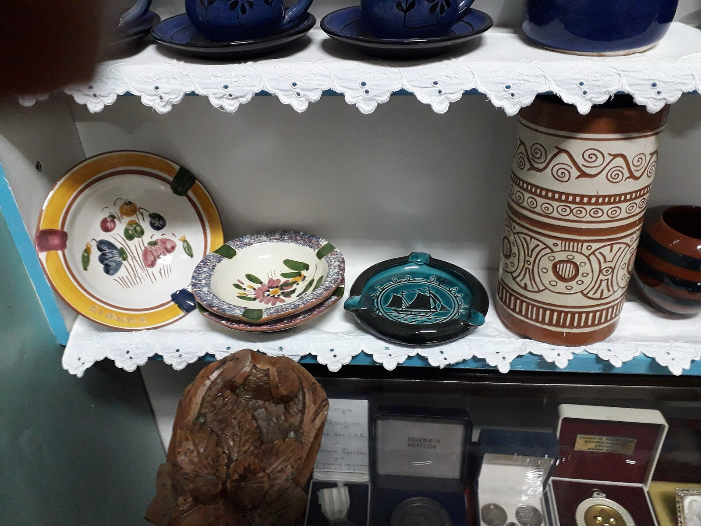
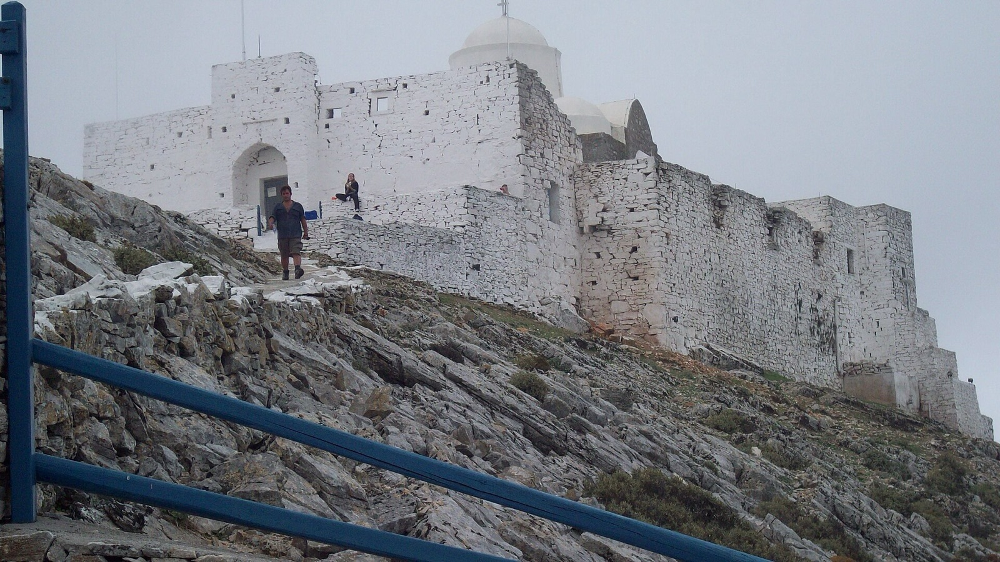

Sifnos
Kultur
Töpferei, Musik und die Feste des Sommers auf Sifnos.

Foto: Catlemur, CC BY-SA 4.0, über Wikimedia Commons

Töpferei
Sifnos hat eine lange Tradition der Töpferei. Ihr Ton, aus verwittertem Schiefer entstanden, ist feuerfest, und die Kochtöpfe der Insel werden daraus hergestellt: der tsikali für Schmorgerichte, die skepastaria für die Revithada, der mastelo für lange geschmortes Fleisch, der Schornsteinaufsatz flaros, außerdem Krüge, Vorratsgefäße und Kohlebecken.
In den Jahrhunderten der Piraterie lagen die Werkstätten im Landesinneren, in Artemonas und Ano Petali. Als die Piraterie endete, zogen die Töpfer hinunter an die Küste, wo Boote ihre Ware laden konnten, und wohnten unter der Woche in der Werkstatt. Seit dem 18. und 19. Jahrhundert gingen viele fort, um anderswo zu arbeiten, in Attika und auf anderen Inseln, und im Griechischen bekam das Wort Sifnios die Bedeutung „Töpfer“. Die Töpferei von Sifnos steht im Nationalen Verzeichnis des immateriellen Kulturerbes Griechenlands, und fünfzehn bis zwanzig Werkstätten sind in Betrieb.
Das Keramikmuseum im Ktima Dragatsi in Artemonas zeigt die Arbeiten der Töpfer der Insel. Werkstätten:
-
Atsonios
Vathi
Die Familienwerkstatt von Antonis Atsonios, heute von seinem Sohn Yannis geführt, mit ihrem Brennofen am Meer in Tsopos.
-
Peristeriona
Kamares
Das Geschäft von Georgios Atsonios nahe dem Hafen, im Sommer geöffnet.
-
Lembesis
Artemonas
Eine Familienwerkstatt in vierter Generation, die ihre eigene Ware verkauft.
Musik und Tanz
Die traditionelle Musik auf Sifnos spielt das takimi, das hiesige Paar aus Geige und Laouto, bei den Panigyria und örtlichen Festen. Getanzt werden die Tänze der Kykladen, darunter Syrtos und Balos; die meisten Lieder sind Liebeslieder. Ein Gedicht von Aristomenis Provelengios, einem auf Sifnos geborenen Dichter, «Αέρι», wurde vertont und wird bis heute gesungen.
Aufnahmen: Songs of Sifnos, unpublished recordings 1930–1998 versammelt 21 Lieder aus dem Musikfolklore-Archiv Melpo Merlier und aus anderen Sammlungen.
Wo Sie sie hören können:
- Bei den Panigyria, siehe unten, den ganzen Sommer über.
- MuSifanto, ein Festival für klassische Musik Ende Juni und Anfang Juli, in Klosterhöfen, auf Dorfplätzen und auf alten Wegen; an den Abschlussabenden waren auch Geige und Laouto der Insel zu hören. filoitounisiou.gr/musifanto.
- Das Gastronomiefest Nikolaos Tselementes im September, auf dem Platz von Artemonas, mit Geige und Laouto und Tanz an jedem Abend.
- Die Tanzgruppen des Kulturvereins, die am Pfingstmontag traditionelle Tänze aufführen.
Panigyria
Ein panigyri ist das Fest einer Kirche am Tag ihres Heiligen, religiös und gesellig zugleich: am Vorabend die Vesper, danach ein Essen für alle Anwesenden, mit Musik und Tanz.
Auf Sifnos richtet jedes Fest ein panigyras aus und bezahlt es, ein Einheimischer, eine Familie oder eine Gruppe von Freunden und Spendern, nicht die Gemeinde und keine Sponsoren. Der panigyras verwahrt die Ikone des Heiligen ein Jahr lang zu Hause und gibt sie dann weiter; bei manchen Kirchen gibt es Wartelisten über Jahre. Das Essen folgt dem Brauch: zuerst Revithada, dann Fleisch in roter Soße mit Nudeln, in Fastenzeiten Stockfisch, und Brot für alle Anwesenden.

Foto: Catlemur, CC BY-SA 4.0, über Wikimedia Commons

Die Panigyria folgen dem Kirchenkalender, von Christi Himmelfahrt (dem Fest von Chrysopigi) bis Mitte September; die Termine werden jedes Jahr vor Ort bekannt gegeben, und hier wird ein Kalender geführt.
Museen und Klöster
- Volkskundemuseum, Apollonia
- Am Hauptplatz: Spitzen, Trachten und Strohhüte aus Sifnos, Werkzeuge, Kochtöpfe und eine frühe Ausgabe des Kochbuchs von Tselementes. 2024 war es eine Zeit lang geschlossen; fragen Sie uns also, ob es geöffnet ist.
- Chrysopigi
- Das Kloster der Panagia Chrysopigi aus dem 17. Jahrhundert, seit 1964 Schutzpatronin der Insel, auf einem gespaltenen Felsen im Meer zwischen Platys Gialos und Faros.
- Panagia Vrysiani
- Ein Kloster aus dem 17. Jahrhundert in Exambela, mit einem Museum für kirchliche Kunst.
- Profitis Ilias o Psilos
- Ein befestigtes Kloster aus der Mitte des 17. Jahrhunderts auf dem höchsten Gipfel der Insel, von Fyrogia aus zu Fuß in etwa einer Stunde zu erreichen.

Foto: Evelin123, CC BY-SA 3.0 GR, über Wikimedia Commons

Lektüre und Quellen
- Pittas, G. 2011. Πανηγύρια στο Αιγαίο [Panigyria in the Aegean]. Athens. Über das Buch.
- Songs of Sifnos, unpublished recordings 1930–1998. 2001. Melpo Merlier Music Folklore Archive.
- “Pottery of Sifnos”, Archipelago Network. Europeana.
- “Pottery”, “Feasts” und “Churches and monasteries”, roomsinsifnos.com.
- “Γιατί τα πανηγύρια της Σίφνου ξεχωρίζουν”, travel.gr.
- “Sifnos pottery”, greektravel.com.
- “Folklore Museum of Apollonia”, aegeanislands.gr.
- “MuSifanto 2026”, Ta Nea.
- Wikipedia, “Panagia Chrysopigi” und “Sifnos”.
Dies ist ein Führer für Gäste, keine eigene Forschung.